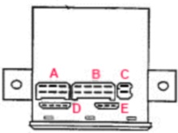

Error code reading:
Always check that the heater's fuses in box "56" have not blown, and that the control unit's ground connection B:4 is good first.
Connect a test lamp between the control unit's connector B:1 and ground.
When a breakdown in operations has occurred, there is a flash signal in the heater's post-operational phase that consists of 5 short, then 1-9 longer flashes (the long flashes must be counted).
Fault codes:
1 Long flash: non-start.
2 Long flashes: flame extinguishes during operation.
3 Long flashes: undervoltage.
4 Long flashes: flame sensor indicates constant flame.
5 Long flashes: flame sensor fault.
6 Long flashes: temperature sensor fault.
7 Long flashes: fuel pump fault.
8 Long flashes: faulty combustion air fan.
9 Long flashes: glow plug fault.